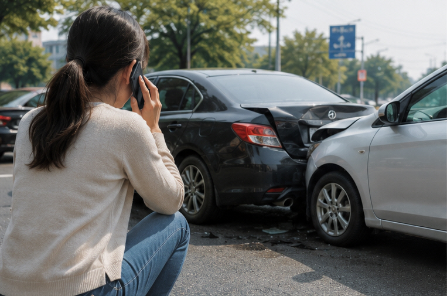
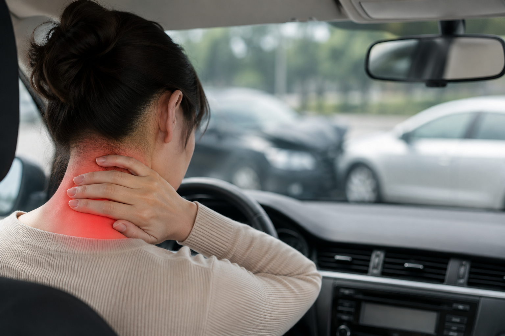
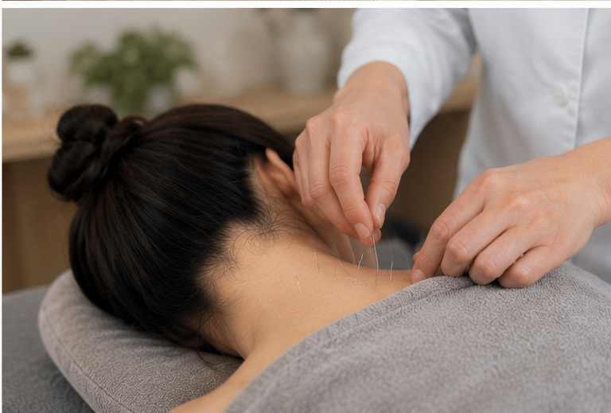
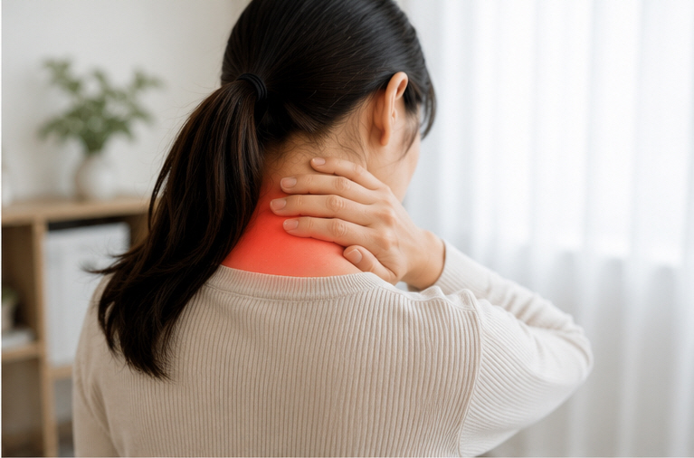

교통사고 이후의
몸과 마음을
함께 살펴봅니다.
교통사고 이후에는 목·어깨·허리 등의 통증뿐 아니라 두통, 어지럼, 수면의 변화, 긴장감이나 불안 등 여러 불편이 나타날 수 있습니다.

사고 이후 나타날 수 있는 여러 불편
사고 상황과 개인의 상태에 따라 증상의 종류와 정도는 다를 수 있습니다.
목·어깨·허리 통증
근육과 관절 주변의 통증이나 뻣뻣함, 움직일 때의 불편을 호소하는 경우가 있습니다.
염좌 · 타박
사고 당시의 충격 후 여러 부위에서 염좌나 타박과 관련된 불편을 느끼는 경우가 있습니다.
두통 · 어지럼
사고 이후 두통이나 어지럼, 머리가 무겁게 느껴지는 등의 불편이 동반될 수 있습니다.
수면 · 긴장 · 불안
잠들기 어렵거나 자주 깨는 등 수면의 변화, 긴장감이나 불안 등의 불편을 호소하기도 합니다.

사고 후에는 증상의 변화를 함께 살펴봅니다
사고 직후에는 생각보다 괜찮다고 느끼는 경우도 있습니다.
그러나 시간이 지나면서 통증이 보다 분명하게 느껴지거나 처음에는 불편하지 않았던 부위에서 증상을 느끼는 경우도 있습니다.
따라서 사고 이후에는 특정 시점의 증상만 보는 것보다 증상이 어떻게 변하고 있는지를 함께 살펴보는 것이 중요합니다.
증상이 지속되거나 변화한다면 현재 상태를 확인하고 필요한 진료 방향을 상담할 수 있습니다.
상태에 따라 한의진료 방법을 결정합니다
사고 상황과 현재 증상, 연령 및 건강 상태를 살펴 진료 방법을 결정합니다.

구체적인 진료 방법과 적용 여부는 사고 후 증상과 개인의 상태를 확인한 뒤 결정합니다.
통증뿐 아니라 사고 후의 심신 변화도 살펴봅니다
사고 후 불편감은 근육이나 관절 부위에만 나타나는 것은 아닙니다.
두통 · 수면 변화 · 긴장감 · 불안
사고 이후 목이나 허리의 통증과 함께 두통, 어지럼, 잠들기 어렵거나 자주 깨는 등의 수면 변화, 긴장감이나 불안을 호소하는 경우도 있습니다.
솔솔한의원에서는 통증 부위만을 따로 보기보다 사고 전후의 상태, 증상이 시작된 시점과 변화, 수면과 일상생활의 변화 등도 함께 확인합니다.
사고 이후 신체적인 불편과 함께 나타나는 수면, 긴장, 불안 등의 변화도 진료 시 현재 상태와 경과를 함께 살펴봅니다.

전체 상태를 고려한
한약 상담
자동차사고 후 한약은 모든 사람에게 동일하게 처방하는 것이 아니라, 사고 이후 나타난 증상과 현재 몸 상태를 살펴 처방 여부를 결정합니다.
통증과 근육의 긴장, 타박과 관련된 불편뿐 아니라 두통이나 수면 변화, 긴장감 등 함께 나타나는 증상도 진료 시 확인할 수 있습니다.
필요하다고 판단되는 경우 현재 상태를 고려하여 한약 처방을 상담합니다.
아이도 자동차사고 이후 상태를 살펴볼 수 있습니다
아이의 연령과 현재 상태를 함께 확인합니다.
아이들은 자신의 불편을 정확하게 표현하기 어려운 경우가 있어 통증뿐 아니라 평소와 다른 수면이나 활동의 변화 등이 있는지도 함께 살펴볼 수 있습니다.
소아의 연령과 상태에 따라 소아침이나 피내침 등 비교적 자극이 적은 방법을 고려할 수 있으며 필요한 경우 다른 진료 방법도 함께 검토합니다.
구체적인 진료 방법은 아이의 연령, 현재 나타나는 증상 및 진료 결과에 따라 결정합니다.
자동차사고 진료에 대해 자주 묻는 질문
사고 당일에는 괜찮았는데 며칠 뒤 불편해질 수도 있나요?
사고 직후에는 불편이 크지 않았더라도 시간이 지나면서 통증이 보다 분명하게 느껴지거나 다른 부위에서 불편을 느끼는 경우가 있습니다. 진료 시 증상이 언제 시작되었고 어떻게 변했는지 말씀해주세요.
어떤 한의진료를 받을 수 있나요?
현재 상태에 따라 침, 뜸, 부항, 약침, 추나, 한약, 경피경근요법 등의 물리치료 등을 고려할 수 있습니다. 구체적인 진료 방법은 상태를 확인한 뒤 결정합니다.
통증 외에 잠을 잘 못 자거나 긴장되는 것도 말씀드려도 되나요?
네. 사고 이후 나타난 두통, 어지럼, 수면 변화, 긴장감이나 불안 등 평소와 달라진 부분도 진료 시 함께 말씀해주시면 됩니다.
아이도 자동차사고 후 진료받을 수 있나요?
네. 아이의 연령과 현재 상태를 확인한 뒤 적절한 진료 방법을 상담합니다.
한약도 상담할 수 있나요?
네. 사고 이후 나타난 증상과 현재 상태를 확인한 뒤 필요한 경우 한약 처방 여부를 상담할 수 있습니다.
자동차사고 관련 진료도 네이버 예약을 할 수 있나요?
네. 네이버 예약을 이용하실 수 있습니다. 예약 시 자동차사고 관련 진료임을 알려주시면 됩니다.
교통사고 건강칼럼
교통사고 후 진료실에서 자주 듣는 질문을 중심으로 알아두면 좋은 내용을 정리했습니다. 궁금한 제목을 누르면 내용을 확인하실 수 있습니다.
01. 교통사고 직후에는 괜찮았는데 다음 날 더 아픈 이유는?
교통사고 후에는 사고 당일보다 시간이 지난 뒤 목이나 어깨, 허리 등의 불편을 더 분명하게 느끼는 경우가 있습니다. 사고 당시에는 사고 처리 등으로 자신의 몸 상태를 세세하게 확인하지 못하기도 합니다.
사고 당시 상황과 이후 변화를 함께 살펴봅니다
자동차가 충돌하거나 급하게 멈추는 과정에서는 몸에도 갑작스러운 힘이 전달될 수 있습니다. 특히 목이나 허리처럼 움직임이 많은 부위에서는 이후 뻣뻣함이나 움직일 때의 불편을 느끼는 경우가 있습니다.
진료를 받을 때는 사고가 발생한 시점, 충격의 방향, 증상이 시작된 시점과 변화 등을 함께 말씀해주시면 현재 상태를 살펴보는 데 도움이 됩니다.
02. 교통사고 후 두통과 뒷목 통증이 함께 나타난다면?
교통사고 후 목이 뻐근하면서 머리가 무겁거나 두통을 함께 느끼는 경우가 있습니다. 다만 사고 후 나타나는 두통의 원인이 모두 같은 것은 아닙니다.
두통이 언제, 어떻게 시작됐는지 확인합니다
두통이 사고 직후부터 있었는지, 시간이 지나면서 나타났는지, 어느 부위가 불편한지, 목 움직임에 따라 증상이 달라지는지 등을 살펴봅니다.
사고 당시 머리를 부딪쳤는지, 어지럼이나 메스꺼움 등 다른 증상이 동반되는지도 함께 확인할 필요가 있습니다.
03. 교통사고 후 허리가 아프다면 무엇을 살펴봐야 할까요?
교통사고 이후 허리 부위가 뻐근하거나 움직일 때 불편하다고 호소하는 경우가 있습니다. 앉았다 일어나거나 허리를 숙이고 펼 때 평소와 다른 느낌이 들기도 합니다.
통증 위치와 움직임에 따른 변화를 확인합니다
허리 가운데가 불편한지, 한쪽으로 치우쳐 불편한지, 엉덩이나 다리 쪽으로 불편감이 이어지는지 등을 구분해서 살펴보는 것이 좋습니다.
평소 허리질환이 있었는지, 사고 전부터 비슷한 증상이 있었는지도 진료 시 함께 말씀해주시면 도움이 됩니다.
04. 교통사고 후 어지럽거나 메스꺼운 경우에는?
교통사고 후 일부에서는 어지럼이나 속이 메스꺼운 느낌을 호소하기도 합니다. 이러한 증상 역시 원인이 하나로 정해져 있는 것은 아닙니다.
사고 당시 머리 충격 여부와 다른 증상을 함께 살펴봅니다
머리를 직접 부딪쳤는지, 두통이나 시야의 변화가 함께 있는지, 증상이 점점 심해지고 있는지 등을 확인해야 합니다.
어지럼의 양상도 사람마다 다를 수 있으므로 언제 심해지는지, 움직임과 관계가 있는지, 얼마나 지속되는지 등을 진료 시 알려주시는 것이 좋습니다.
05. 교통사고 후 잠이 잘 안 오거나 긴장이 계속된다면?
사고 이후 통증뿐 아니라 잠들기 어려워지거나 자주 깨는 등 수면이 달라졌다고 말씀하시는 경우가 있습니다. 또 사고 장면이 신경 쓰이거나 운전할 때 긴장되는 느낌을 호소하기도 합니다.
통증과 수면, 긴장감의 변화를 함께 말씀해주세요
수면의 변화가 통증 때문에 나타나는지, 사고 이후 긴장감과 함께 나타나는지 등 현재 상황을 함께 확인하는 것이 좋습니다.
솔솔한의원에서는 사고 후 신체적인 불편뿐 아니라 수면이나 긴장감 등 평소와 달라진 부분도 함께 살펴봅니다.
이승환 대표원장은 한의학박사이자 한방신경정신과 전문의입니다.
06. 가벼운 접촉사고 후에도 몸 상태를 살펴봐야 할까요?
사고의 외형적인 크기와 개인이 느끼는 불편의 정도가 항상 일치하는 것은 아닙니다. 반대로 가벼운 사고였다는 이유만으로 반드시 증상이 생긴다고 생각할 필요도 없습니다.
현재 몸에 나타나는 변화를 기준으로 살펴봅니다
사고 후 목이나 허리의 움직임이 평소와 다른지, 통증이나 뻣뻣함이 생겼는지, 두통이나 어지럼 등 새로운 불편이 나타났는지를 확인해보세요.
별다른 증상이 없다면 지나치게 걱정할 필요는 없지만, 새로운 증상이 나타나거나 불편이 지속된다면 현재 상태를 확인해볼 수 있습니다.
07. 교통사고 후 한의원에서는 어떤 부분을 살펴보나요?
자동차사고 후 진료에서는 아픈 부위만 확인하는 것이 아니라 사고 당시 상황과 이후 증상의 변화를 함께 살펴봅니다.
진료 시 말씀해주시면 도움이 되는 내용
사고가 언제 발생했는지, 어떤 방향으로 충격을 받았는지, 사고 직후와 현재의 증상이 어떻게 다른지, 기존에 비슷한 증상이나 질환이 있었는지 등을 확인합니다.
현재 상태에 따라 침, 뜸, 부항, 약침, 추나, 한약 및 물리치료 등을 고려할 수 있으며 모든 분에게 같은 방법을 적용하는 것은 아닙니다.
08. 아이가 교통사고를 당했다면 어떤 변화를 살펴보면 좋을까요?
아이들은 자신의 불편을 성인처럼 구체적으로 표현하기 어려운 경우가 있습니다. 따라서 사고 후 통증 여부뿐 아니라 평소와 다른 행동이나 생활의 변화도 함께 살펴볼 수 있습니다.
평소와 무엇이 달라졌는지 살펴봅니다
아이가 특정 부위를 자꾸 만지는지, 움직임을 꺼리는지, 평소보다 잠을 잘 못 자거나 보채는지, 두통이나 어지럼 등을 표현하는지 등을 관찰할 수 있습니다.
아이의 연령과 사고 상황에 따라 필요한 평가나 진료 방법은 달라질 수 있습니다.